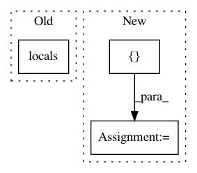

030d1ed98bcdb9e0671223aa60d0dea8bc229d53,unittests/test_fields.py,TestFields,test_scoped_dict_field,#TestFields#,216
Before Change
exec("tester.field = {1: "a", 2: "b" }", globals(), locals())
with pytest.raises(TypeError):
exec("tester.field = [("a", 1), ("b", 2)]", globals(), locals())
with pytest.raises(TypeError):
exec("tester.field = {"a": {1: "k1"}, "b": {2: "k2"}}", globals(),
After Change
tester.field = {1: "a", 2: "b"}
with pytest.raises(TypeError):
tester.field = [("a", 1), ("b", 2)]
with pytest.raises(TypeError):
tester.field = {"a": {1: "k1"}, "b": {2: "k2"}}
In pattern: SUPERPATTERN
Frequency: 3
Non-data size: 3
Instances
Project Name: eth-cscs/reframe
Commit Name: 030d1ed98bcdb9e0671223aa60d0dea8bc229d53
Time: 2020-02-21
Author: manitaras@cscs.ch
File Name: unittests/test_fields.py
Class Name: TestFields
Method Name: test_scoped_dict_field
Project Name: onnx/onnx-tensorflow
Commit Name: f171f659daa99485819214fb35486dd2c92b018f
Time: 2020-05-04
Author: wtsang@us.ibm.com
File Name: onnx_tf/handlers/backend/non_max_suppression.py
Class Name: NonMaxSuppression
Method Name: _common
Project Name: MTG/freesound
Commit Name: 2d57cf126eb6a52f57d482238aacc22c71e587e7
Time: 2018-06-19
Author: alastair.porter@upf.edu
File Name: tags/views.py
Class Name:
Method Name: tags